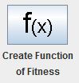
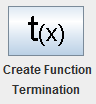

Define Function it allows to define the Fitness Function and the Termination Function.
To define the Fitness Function, must press on the button shown in the image:
To define the Termination Function, must press on the button shown in the image:
The fitness function is mandatory for the development of a Genetic Algorithm, while Termination function is not necessary its implementation.